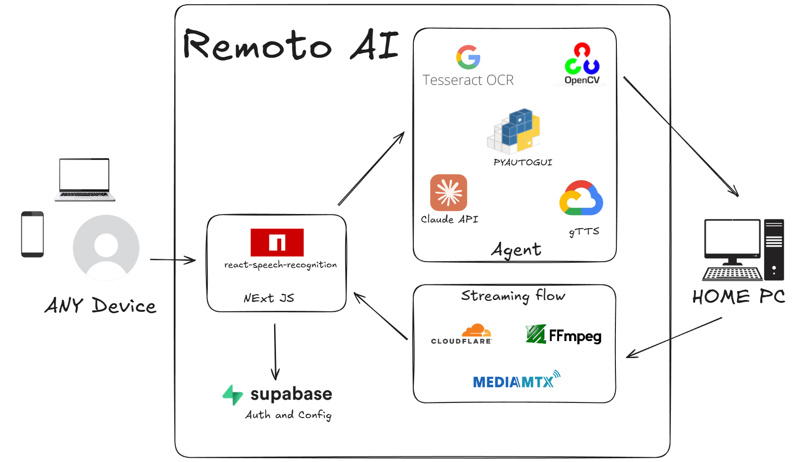

Remote Desktop Control via AI agent

Promo video:
This project was done for the McGill CodeJam hackathon, where we were selected as top 3 finalists out of 76 teams by the judges and finished 2nd overall by a participant vote. My contributions focused on engineering a low-latency media pipeline using MediaMTX, FFmpeg and Cloudflare which allowed us to stream any home desktop with minimal delay and a reliable connection to any device in the world through the web.
The final system combines speech recognition, AI agent processing, and real-time streaming to allow users to interact with their computers remotely from any location by typing or speaking natural language instructions. The command is interpreted by Claude API to translate into keyboard and mouse intructions, and these are executed on the remote desktop while the user sees a live video feed of their screen.